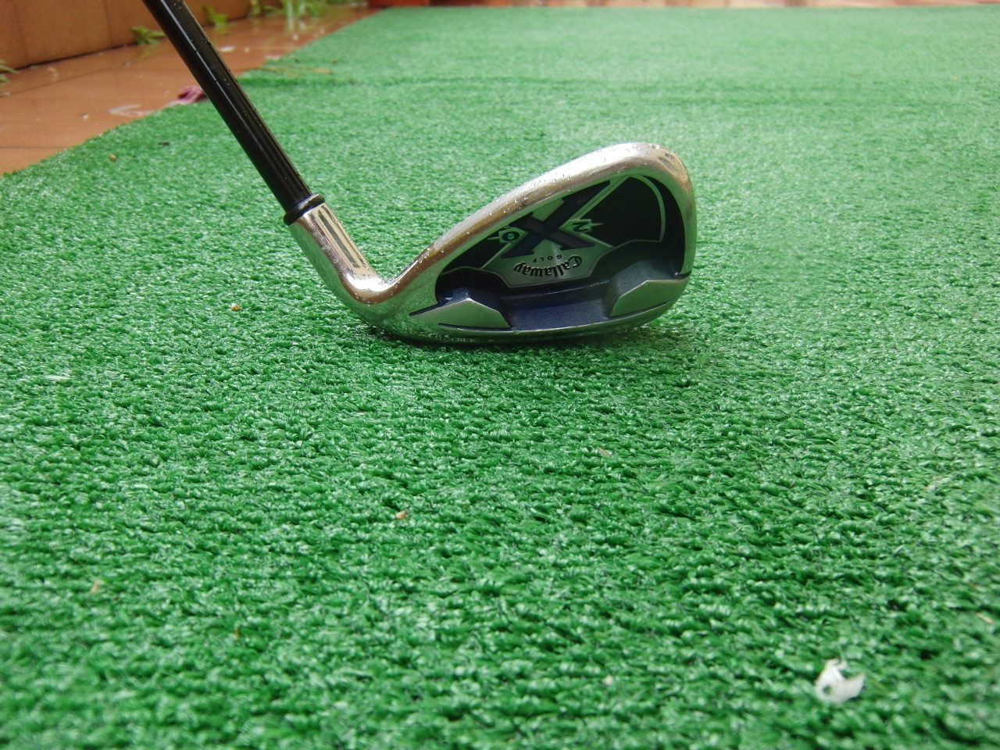

Photo : Fpedraza, CC BY-SA 3.0 — Wikimedia Commons. Photo d'une arme réelle du même type (ou du modèle qui l'inspire), pas une capture du jeu.
Club de golf
STATISTIQUES
Jauges de 0 à 100 : valeurs officielles affichées par Rockstar Games (Social Club) pour l'arme équivalente de GTA V, Golf Club (via GTA Wiki). Les statistiques de GTA 6 n'ont pas encore été publiées : elles peuvent différer. La mobilité est une estimation de Vice City News selon le type d'arme.
Club de golf fait partie des armes recensées dans le matériel officiel de GTA 6. La presse spécialisée le présente ainsi : « le chaos façon country club ».
Ce que disent les chiffres
Dans GTA V, l'arme la plus proche est le modèle « Golf Club ». D'après les jauges officielles de Rockstar, il offre des dégâts faibles, une cadence de tir faible, une portée faible. Ces valeurs donnent une bonne idée du rôle de l'arme, en attendant les chiffres propres à GTA 6.
- ⚠️ Point faible : portée (1/100)
- ⚠️ Point faible : cadence de tir (10/100)
- ⚠️ Point faible : dégâts (20/100)
Conseils d'utilisation
- Silencieuse : n'attire pas l'attention comme une arme à feu.
- Le corps-à-corps de GTA 6 intègre esquives et actions contextuelles (vu dans l'Extended Look).
- Inutile face à des ennemis armés à distance : à réserver aux situations rapprochées.
Conseils fondés sur le comportement de ce type d'arme dans les précédents GTA et sur ce que montre l'Extended Look ; ils seront mis à jour à la sortie du jeu.
Ce qu'on sait pour GTA 6
L'Extended Look du 27 août 2026 a montré un corps-à-corps retravaillé, avec esquives et actions contextuelles (Lucia y frappe un agresseur avec son talon aiguille). Les armes de mêlée restent le moyen le plus discret de régler un conflit.